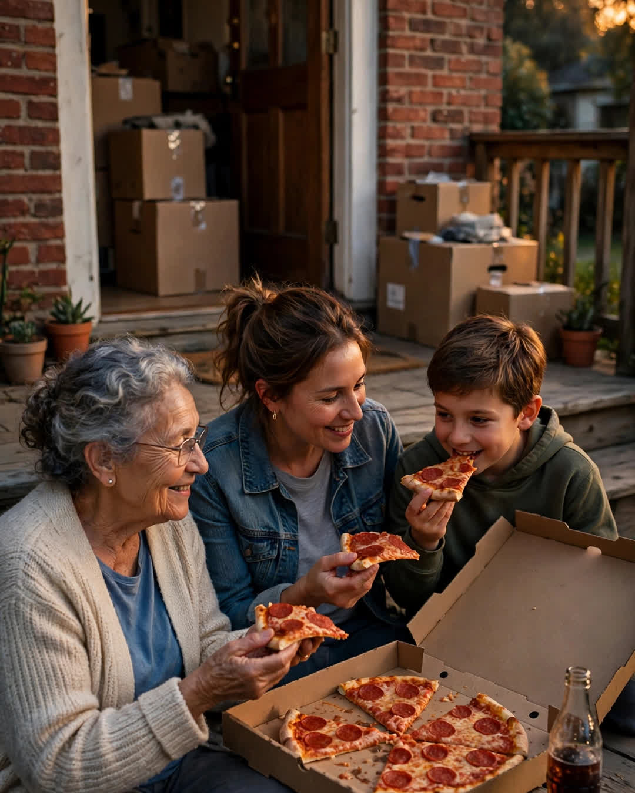

The Moving Day Pizza
A Clipp Kaili original story

Every time our family moves, we eat pizza sitting on the floor — and this spring, the last box was eaten on the porch of the house my daughter had just bought.
It started in 1994, in our first apartment, when my wife and I had no table, no chairs that matched, and exactly enough money after the deposit for one large pepperoni and a two-liter of soda. We ate it on a moving blanket between towers of boxes, and my wife, exhausted, hair full of packing-tape dust, looked around at that mess and said, "Remember this. If we can laugh eating pizza on the floor, we can survive any address."
So we made it a rule. Every move — and there would be more moves than either of us ever planned — the first meal in the new place was pizza on the floor. No plates. No unpacking first. You sat in the middle of whatever chaos you had created, you ate with your hands, and somebody had to make the toast my wife made that first night: "To the floor. May we never be too fancy for it."
We ate moving day pizza in the house we brought our daughter home to, the year the mortgage felt bigger than the rooms. We ate it in the smaller house we downsized to after I lost my job, the year the boxes were mostly labeled "donate" and our girl, then fourteen, ate two slices in determined silence, trying to be brave about a new school. My wife made the toast anyway, and her voice didn't break until the very end.
We ate it in the condo after the kids launched, just the two of us, knees cracking when we stood up, laughing about how the floor had gotten farther away than it used to be.
Five houses. Three decades. One pizza, always pepperoni, always first.
Some families pass down china. We passed down a grease stain.
Our daughter Lauren closed on her first house this March — a little brick place with a crooked porch three streets from where she grew up, bought with savings from six years of nursing shifts and a down payment she refused to let us help with beyond what she called "an emotionally supportive amount." Moving day, her friends hauled the furniture while we tried to stay out of the way.
At six o'clock, Lauren disappeared. She came back carrying a large pepperoni pizza and a two-liter of soda.
"Mom. Dad. Porch," she said. "The floor in there is covered in boxes and I am not sitting on a single one of them. But rules are rules, and this is as close to the floor as this family is getting."
We sat on her crooked porch steps, three generations of sore knees, and she held up her paper plate like a wine glass.
"To the floor," she said. "May I never be too fancy for it."
My wife cried into her napkin and pretended it was the jalapeños, which was a lie, because Lauren orders it plain — extra pepperoni, nothing fancy, first meal, every home.
I looked at my daughter on the porch of a house with her name on the deed, and I understood that a tradition is not really about the thing you repeat. The pizza was never the point. The point was a young couple in an empty apartment deciding what kind of family they were going to be — and then being that kind of family, on the floor, in every house, until their children carried it out the door and onto porches of their own.
You can measure a family's wealth in houses.
Or you can measure it in first meals — and in children who know exactly what to order when a new life begins.
This story is a work of fiction, written to touch hearts and bring families closer.
← Back to all stories